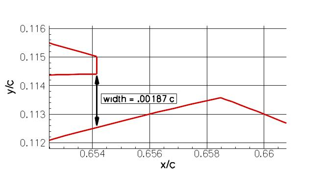
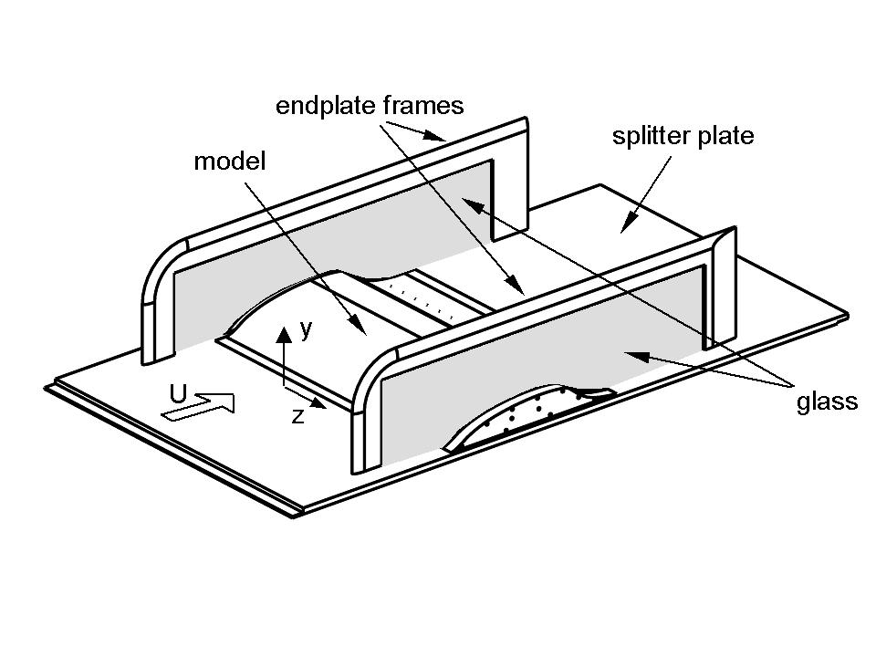
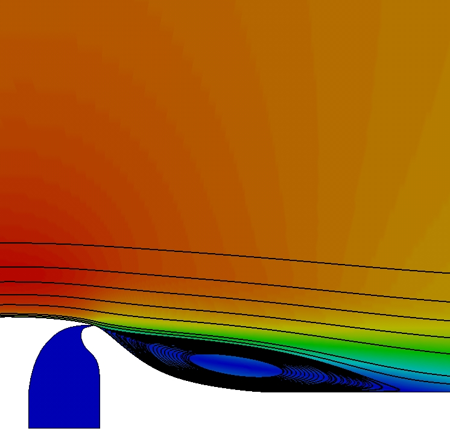
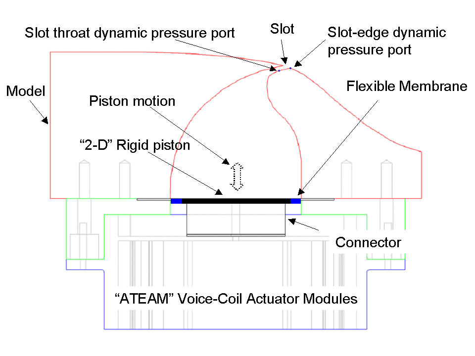
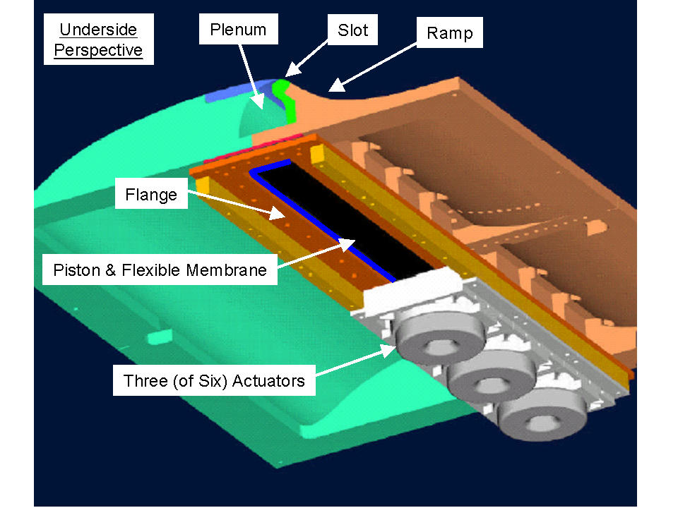
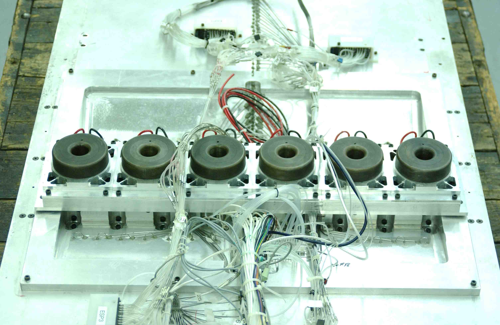

Public Access (formerly Langley Research Center)Turbulence Modeling Resource |
Exp: CFDVAL2004 Case 3: Flow over a Hump Model (Actuator Control)
Return to: CFDVAL2004 - Intro Page
Return to: Data from Experiments - Intro Page Return to: Turbulence Modeling Resource Home Page
Case 3 is a part of the
ERCOFTAC Database (Classic Collection).
It is listed as Case C.83: Wall-mounted two-dimensional hump with oscillatory zero-mass-flux jet or
suction through a slot (keyword: hump).
(Note that Case 3 was also a test case for the
11th ERCOFTAC/IAHR Workshop on
Refined Turbulence Modelling,
April 7-8, 2005, Chalmers Univ. of Technology,
Sweden, and a test case for the
12th ERCOFTAC/IAHR Workshop on Refined Turbulence Modelling, October 12-13, 2006,
Institute for Fluid Mechanics and Technical Acoustics,
Technical University of Berlin, Germany, and a test case for the
V&V I: Code Verification and Solution Verification & Validation Workshop at ECCOMAS CFD 2010,
June 14-17, 2010, Lisbon, Portugal.)
The characteristic reference length of the model is defined here as the
length of the bump on the wall, 16.536 inches. (In Seifert & Pack's
original work on the hump model, the reference length was defined as
the airfoil chord length of 7.874 inches (x = 0.0 to x = 7.874 inches).
Their leading edge was then faired smoothly into the wall from x = -.3937
to x = .3937 inches; however this additional length ahead of x = 0.0 was not
accounted for in their definition of the reference length. For the current
experiment it was felt to be more straightforward to use the actual bump
length as the reference length. As a result
of this, the current scaled (nondimensional) coordinates of the overall body
shape are slightly different from those of Seifert & Pack. A simple rescaling
operation can recover it.)
The model itself
is 23 inches wide between the endplates at both sides (each endplate is approximately
9.25 inches high, 34 inches long, and 0.5 inches thick with an elliptical-shaped
leading edge). The model is 2.116 inches
high at its maximum thickness point. Both uncontrolled (baseline)
and controlled flow scenarios are considered under the conditions
of M = 0.1 and Re somewhat less than 1 million
per chord. The tunnel medium is air at sea level. The model
experiences a fully-developed turbulent boundary layer whose delta
(thickness) at the leading edge of the model is between 1 - 2 inches.
The boundary
layer is subjected to a favorable pressure gradient over the front
convex portion of the body and separates over a relatively short
concave section in the aft part of the body. A slot opening of 0.00187*chord
(chord=0.4200 m) at approximately
the 65% chord station on the model extends across the entire span of
the hump ("slot opening" here means vertical opening below the lip - see figure
below).

Flow control is supplied by means of the
two-dimensional slot across the span, immediately upstream of the
concave surface. One type of control uses steady suction, which
is driven by a suction pump with the mass flow monitored.
The following two figures show a schematic of the hump model
and a sample 2-D CFD result.

 For the oscillatory test, separation control is performed using zero efflux oscillatory
blowing introduced from the spanwise slot, where careful attention is paid to
maintaining slot two-dimensionality. This is achieved by means of a rigid piston that
spans the model. The piston is secured to a flange by means of a flexible membrane
and the flange is bolted to the base of the plenum. The piston is driven externally by
six voice-coil-based actuator modules (Kiedaisch, Nagib and Associates, IIT), generating
slot velocities up to 80m/s at frequencies ranging from 60Hz to 500Hz. A schematic view
of the assembly from the side is shown in fig. 1 below; a view
from the underside of the model, with three modules removed for
purposes of illustrating the piston and membrane, is show in fig. 2. A photograph of the
underside of the model, prior to tunnel installation, is shown in fig. 3. The slot-flow
is calibrated and characterized for both tunnel flow-off (quiescent) and flow-on
(non-quiescent) conditions, using hot-wire anemometry, throat dynamic pressure
measurements and two-dimensional PIV.
Fig. 1 Fig. 2 Fig. 3
Case 3 is a Wall-mounted Glauert-Goldschmied type body, geometrically
similar to that employed by Seifert & Pack (2002). Full details of the current case
are given in Greenblatt et al (2004, 2005) and Naughton et al (2004). The model is
mounted between two glass endplate frames and both leading edge and trailing
edges are faired smoothly with a wind tunnel splitter plate. This is a
nominally two-dimensional experiment, although there are side-wall
effects (3-D flow) near the end-plates. The tunnel dimensions at the
test section are 28 inches wide by 20 inches high, but the hump model is
mounted on a splitter plate (0.5 inches thick), yielding a nominal test section
height of 15.032 inches (distance from the splitter plate to the top wall).
The splitter plate extends 76.188 inches upstream of the model's leading
edge. Also, 44.437 inches downstream of the model's leading edge,
the splitter plate is equipped with a flap (3.75 inches long), which
is deflected up during the experiment in order to control the air flow
beneath the splitter plate. This control affects the stagnation point
at the leading edge of the splitter plate, avoiding massive separation
in that region.
Note that the two endplate frames create blockage which affects all the measurements for this case. See "Experimantalist's Note 3", in the Experimental Data link below. Also, one of the questions in the FAQS link below addresses this issue.
References:
Return to: CFDVAL2004 - Intro Page
Return to: Data from Experiments - Intro Page Return to: Turbulence Modeling Resource Home Page
Page Curators: Christopher Rumsey,
Ethan Vogel,
Clark Pederson
Last Updated: 11/04/2021